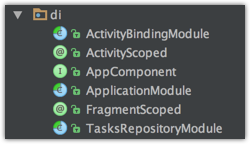

关于依赖注入在 之前的文章里有详细的分析
而最近的 dagger 的更新又再次方便了注入过程 。
回顾之前的 dagger 在 Activity 、fragment 等 Android 组件中是如何注入的
- 在 moduel 中，提供所需注入的元素的构造方法
- 构造对应的
Component，包含所需的module，并将module中的方法暴露出。并申明对应的inject方法 - 在actvity 中注入
这样做的弊端是
- 即使Dagger使我们的代码耦合性更低，但是如果要面临重构，我们仍然不得不去面对每个Activity中这样数行需要我们「复制」+「粘贴」的代码，这会给我们的重构带来一定的难度（试想一下，如果我们的应用有数十个乃至上百个这样的Activity或者Fragment容器，我们的重构计划，首先就要面对这样数百行的代码）。
- 更重要的是，它要求注射类型（FrombulationActivity）知道其注射器。 即使这是通过接口而不是具体类型完成的，它打破了依赖注入的核心原则：一个类不应该知道如何实现依赖注入。
- 在开发过程中明显发现，在每个 Activity 中构造对应的
Component，然后注入 是件很恶心的事情，而且这个注入并不能写入 base 类中，只能每个 Activity 中再重复写入
在新版的 dagger 中提供了 ContributesAndroidInjector这样一个注解
看下官方文档如何描述的
/**
* Generates an {@link AndroidInjector} for the return type of this method. The injector is
* implemented with a {@link dagger.Subcomponent} and will be a child of the {@link dagger.Module}'s
* component.
*
* <p>This annotation must be applied to an abstract method in a {@link dagger.Module} that returns
* a concrete Android framework type (e.g. {@code FooActivity}, {@code BarFragment}, {@code
* MyService}, etc). The method should have no parameters.
*
* <p>For more information, see <a href="https://google.github.io/dagger/android">the docs</a>
*/
@ContributesAndroidInjector使用在 module 中的抽象方法上。该方法不该有参数，返回类型必须是 Activity、Fragment 和 Service 等 Android Framework 的类型。dagger 将会为这样的一个方法生成一个对应的 Subcomponent。这个注解还能接受一系列 Module 作为值，这些 module 将会成为所生成的 Subcomponent 的 module。
搭建过程
添加依赖
// Dagger dependencies
compile "com.google.dagger:dagger:$rootProject.daggerVersion"
annotationProcessor "com.google.dagger:dagger-compiler:$rootProject.daggerVersion"
compile "com.google.dagger:dagger-android:$rootProject.daggerVersion"
compile "com.google.dagger:dagger-android-support:$rootProject.daggerVersion" // if you use the support libraries
annotationProcessor "com.google.dagger:dagger-android-processor:$rootProject.daggerVersion"
ActivityBindingModule
ActivityBindingModule 使用dagger 框架提供ContributesAndroidInjector注解 辅助我们注入 Android 框架
@Module
public abstract class ActivityBindingModule {
@ActivityScoped
@ContributesAndroidInjector(modules = TellTruePresenterModule.class)
abstract MainActivity mainActivity();
@ActivityScoped
@ContributesAndroidInjector(modules = SplashPresenterModule.class)
abstract SplashActivity splashActivity();
@ActivityScoped
@ContributesAndroidInjector(modules = LoginModule.class)
abstract LoginActivity loginActivity();
}
以后每次增加 Activity 或者 service 等，只要在这添加一行代码就行了，不需要修改对应的 Activity
AppComponent
@Singleton
@Component(modules = {TasksRepositoryModule.class,
ApplicationModule.class,
ActivityBindingModule.class,
AndroidSupportInjectionModule.class})
public interface AppComponent extends AndroidInjector<DaggerApplication> {
void inject(MyApplication application);
TasksRepository getTasksRepository();
@Override
void inject(DaggerApplication instance);
// Gives us syntactic sugar. we can then do DaggerAppComponent.builder().application(this).build().inject(this);
// never having to instantiate any modules or say which module we are passing the application to.
// Application will just be provided into our app graph now.
@Component.Builder
interface Builder {
@BindsInstance
AppComponent.Builder application(Application application);
AppComponent build();
}
// APIInterface APIInterface();
}
注意注解中 module 的依赖
ApplicationModule
@Module
public abstract class ApplicationModule {
//expose Application as an injectable context
@Binds
abstract Context bindContext(Application application);
@Provides
public static APIInterface provideInterface() {
Retrofit retrofit= new Retrofit.Builder()
.baseUrl("https://api.github.com")
.addConverterFactory(GsonConverterFactory.create())
.build();
APIInterface service = retrofit.create(APIInterface.class);
return service;
}
}
可以把全局的一些单例类放在这个 moduel。 比如RetrofitService、application 的context 等
添加 Activity fragment 的 scope
@Documented
@Scope
@Retention(RetentionPolicy.RUNTIME)
public @interface ActivityScoped {
}
@Scope
@Retention(RetentionPolicy.RUNTIME)
@Target({ElementType.TYPE, ElementType.METHOD})
public @interface FragmentScoped {}
application 中 inject
public class MyApplication extends DaggerApplication {
@Inject
TasksRepository tasksRepository;
@Override
protected AndroidInjector<? extends DaggerApplication> applicationInjector() {
AppComponent appComponent = DaggerAppComponent.builder().application(this).build();
appComponent.inject(this);
return appComponent;
}
@Override
public void onCreate() {
super.onCreate();
Utils.init(this);
}
}
注意
activity 和 fragment 等都要 extend 自 dagger 中的对应类，也可以将对应的逻辑抽象至 base 类中
最后可以将以上类放入同一个包中

参考
https://juejin.im/entry/593cee56ac502e006b3dc9c2
https://segmentfault.com/a/1190000010016618